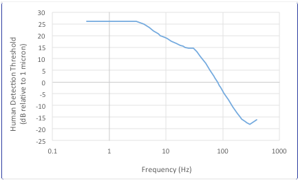
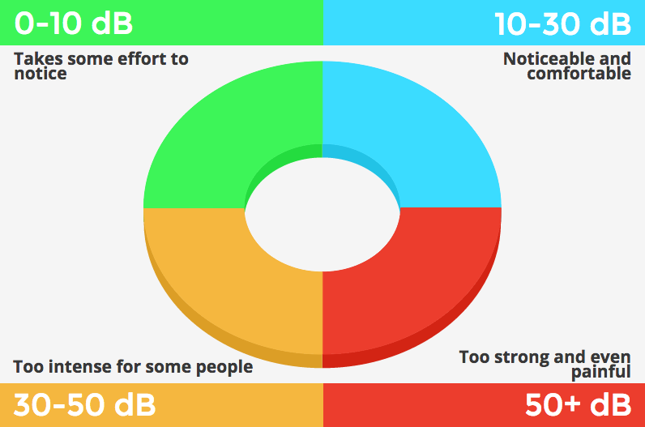

In this tutorial, we use the terms “amplitude” and “frequency” to refer to the physical signal parameters, and “intensity” and “pitch” to refer to how people perceive these two parameters, respectively.
Let’s start with the simple case of a single-frequency sinusoidal displacement signal
$$x(t)=Acos(2πft)$$
where A denotes amplitude, f denotes frequency and t denotes time.
One way to measure the output of a tactor is to attach an accelerometer (a sensor that measures acceleration) to it.
The time derivative of x(t) is the velocity x'(t). The time derivative of x'(t) is the acceleration x''(t). It follows that
$$x''(t)= -A(2πf)^2 cos(2πft)=-Bcos(2πft)$$
where
$$B=A(2πf)^2$$
denotes the amplitude of the measured acceleration function. The amplitude of the displacement A can be calculated as follows:
$$A=B/(2πf)^2$$
Vibrations with the same physical amplitude A but at two different frequencies f1 and f2 may not feel equally intense. This is because human sensitivity to vibrations is frequency-dependent. Human detection threshold, an inverse to human sensitivity, is defined as the minimum vibration amplitude at which the vibration is barely detectable. It is usually plotted on a log scale relative to 1 micron; i.e.,
$$20log_10 [A/(1μ)]$$
Sensation level (SL) is specified in dB above Human Detection Threshold. For example, at 200 Hz, human detection threshold is about −15.0 dB relative to 1 micron. If the output of a tactor is measured at 1.0 g, or equivalently 9.81 m⁄s^2 , then the corresponding displacement amplitude is 6.21 micron, or equivalently 15.9 dB re 1 micron. Therefore the vibration intensity is 30.9 dB SL.
While vibrations at 0-10 dB SL are above detection threshold, they take some effort to notice. Vibrations at 10-30 dB SL are noticeable and comfortable. At 30-40 dB SL, vibrations may start to feel too intense for some people. Most people find vibrations above 50 dB SL to be too strong or even painful.
Many factors affect the human detection threshold, including body site, contact area, signal duration, skin-surface temperature, age, activity level (it is harder to notice the phone in the pocket vibrating when one is moving about), etc. The way a tactor is attached to the skin (via double-sided tapes, Velcro straps, rubber band, etc.) can also significantly alter the measured output of a tactor. All these factors affect the sensation level and the perceived intensity of vibrations.
CONTACT US!
Ready to start your next project with us? Have a topic to suggest for our online tutorials?
Give us a call or send us an email!
Dr. Hong Z. Tan
+1.765.490.5776
Email